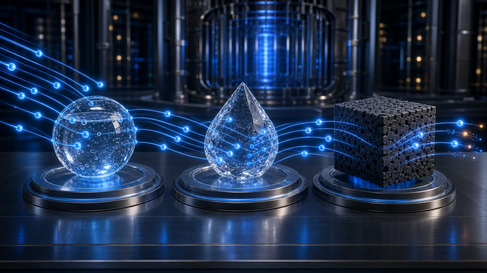
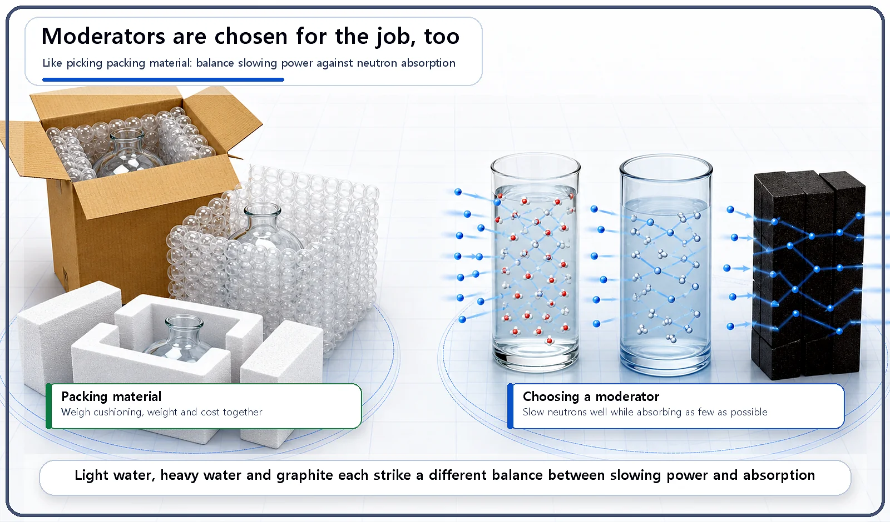
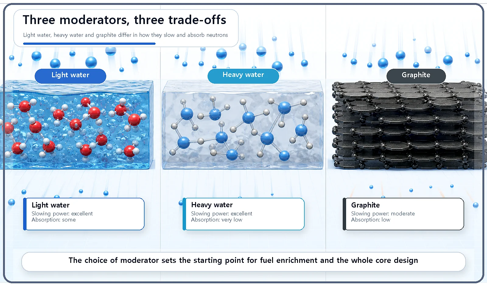

Reactor Components · 055
Picking Packing Material for Neutrons — How a Reactor Moderator Is Chosen
Like choosing packing material, choosing a moderator means balancing how well it slows neutrons against how many it swallows.

A moderator slows the fast neutrons from fission down to a speed the fuel can readily absorb. A good one slows neutrons well while absorbing as few of them as possible. Light water, heavy water and graphite each strike a different balance between those two demands, and that choice shapes the fuel enrichment and the whole core design. [1]
Think about packing a fragile parcel
When you ship something breakable, you fill the box with cushioning: bubble wrap, or molded polystyrene foam. But not all cushioning is the same. Bubble wrap is light and cheap, but its cushioning is only average. Molded foam cushions far better, but it's bulky and awkward to work with. So you pick the packing material to suit whatever you're sending.
A neutron loses speed most effectively when it bumps into light nuclei. The material that does this job inside a reactor is the moderator, and choosing it is a lot like choosing packing material.
What a moderator actually does
The moderator is the material that fills the spaces between the fuel rods. Its job is to slow the fast neutrons that fly out of fission down to a speed at which the fuel can readily absorb them; these slowed-down neutrons are called thermal neutrons.
In commercial reactors, the most common moderator is ordinary water, called light water. Some reactor types instead use heavy water (water containing deuterium, a heavier form of hydrogen) or graphite.
What do you weigh when choosing a moderator?
A good moderator has to do two things at once. It must slow neutrons down effectively (its slowing-down power), and it must avoid needlessly absorbing them (a low absorption rate). Like cushioning versus weight and cost when choosing packing material, these two requirements pull against each other.
Light water is excellent at slowing neutrons down, but it also absorbs a certain share of them. To make up for that loss, reactors moderated by light water use low-enriched uranium: uranium in which the share of uranium-235 has been raised above its natural level.
Heavy water absorbs almost no neutrons, which makes it a very efficient moderator. Its drawback is that it's expensive to produce. In exchange, reactors that use heavy water can run on natural uranium, uranium that has not been enriched at all.
Graphite absorbs very few neutrons and, being a solid, is easy to handle. That's why it was used as the moderator in early reactors and in some reactor types.

The three moderators at a glance
| Moderator | Slowing-down power | Neutron absorption | Consequence for fuel |
|---|---|---|---|
| Light water | Excellent | Some | Needs low-enriched uranium |
| Heavy water | Excellent | Very low | Can use natural uranium; expensive to produce |
| Graphite | Moderate | Low | Solid and easy to handle; early reactors and some reactor types |
Just as each packing material has its own balance between cushioning and weight or cost, each moderator has its own balance point.

This choice shapes the entire reactor
Which moderator you choose (water, heavy water or graphite) changes the core design, the uranium enrichment the fuel needs, the size of the core and much more. Choosing the moderator is one of the decisions that sets the starting point for the whole reactor design.
One more point is worth flagging. In light-water reactors, the moderator and the coolant are often the very same substance, water, so it's easy to treat them as one and the same thing. Conceptually, though, they are two distinct roles.
Two common misconceptions
"Any material will do as a moderator." No. The material has to be chosen by weighing two competing requirements together: slowing-down power and neutron absorption.
"The moderator and the coolant are always different substances." No. In many cases, such as light-water reactors, a single substance, water, serves as both moderator and coolant at once. The two roles are still conceptually separate.
Key takeaways
A moderator slows fission neutrons so the fuel can absorb them. It must slow neutrons well while absorbing few; light water, heavy water and graphite balance these differently, and the choice sets the fuel enrichment and the starting point for the whole reactor design.